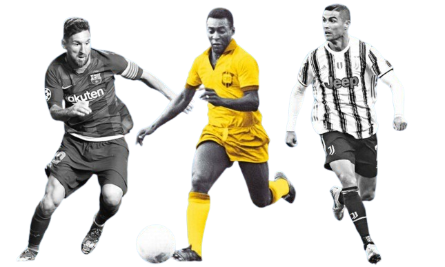

Um pouco sobre as principais Competições do Futebol mundial
Ao longo dos anos, o futebol viu surgir uma série de jogadores lendários que deixaram sua marca no esporte. Pelé, considerado por muitos como o maior jogador de todos os tempos, ganhou três Copas do Mundo com o Brasil e marcou mais de 1.000 gols em sua carreira.
Outro jogador icônico é Diego Maradona, conhecido por sua habilidade excepcional e pela "Mão de Deus" na Copa do Mundo de 1986, onde levou a Argentina ao título. Lionel Messi, por sua vez, é aclamado por sua habilidade de driblar e marcar gols incríveis pelo Barcelona e pela seleção argentina.
Cristiano Ronaldo também merece destaque, com sua incrível capacidade de marcar gols e vencer títulos tanto pelo Real Madrid quanto pela seleção portuguesa. Outros jogadores como Johan Cruyff, Zinedine Zidane, Ronaldo Nazário e Michel Platini também deixaram sua marca no futebol, inspirando gerações de jogadores e fãs em todo o mundo.
